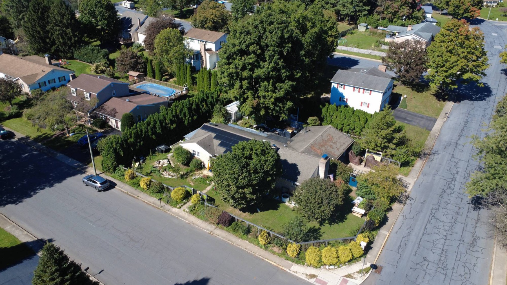

Real estate photography
Buyers scroll past ground-level photos. Aerial shots show the whole property at once: the house, the yard, the lot lines and what's nearby.
Good for: Realtors, homeowners selling a property, land and commercial listings.
- Edited aerial photos of the property and its surroundings
- Aerial video for listing pages and social media
- Angles that show lot size, layout and neighborhood context